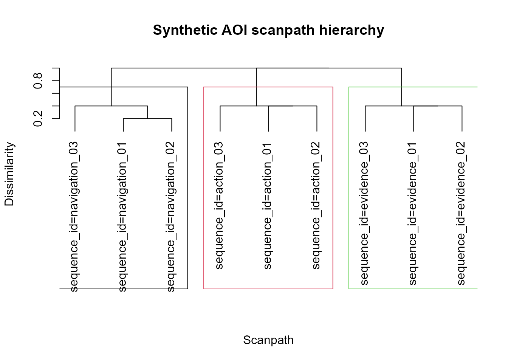
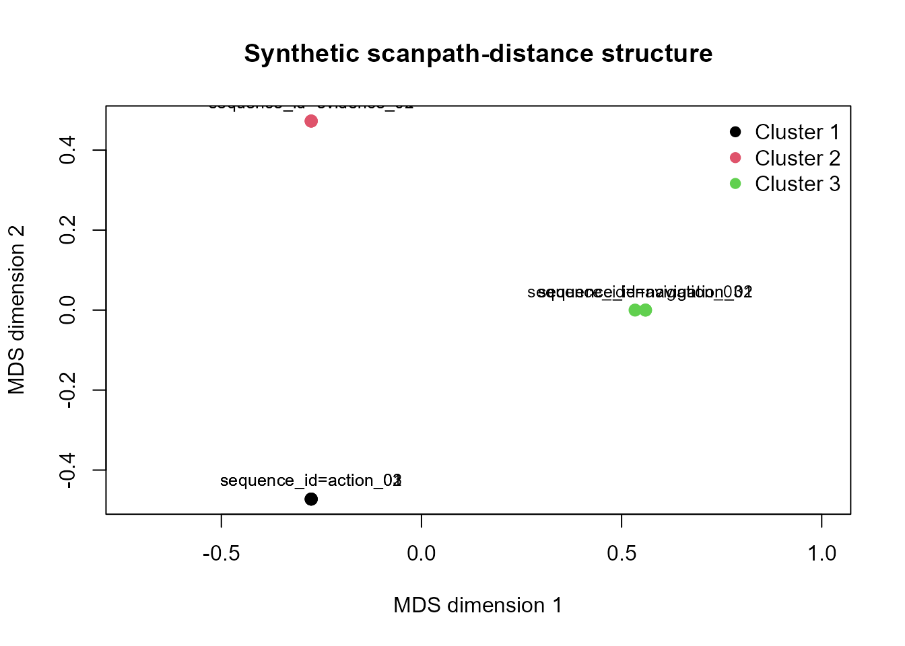
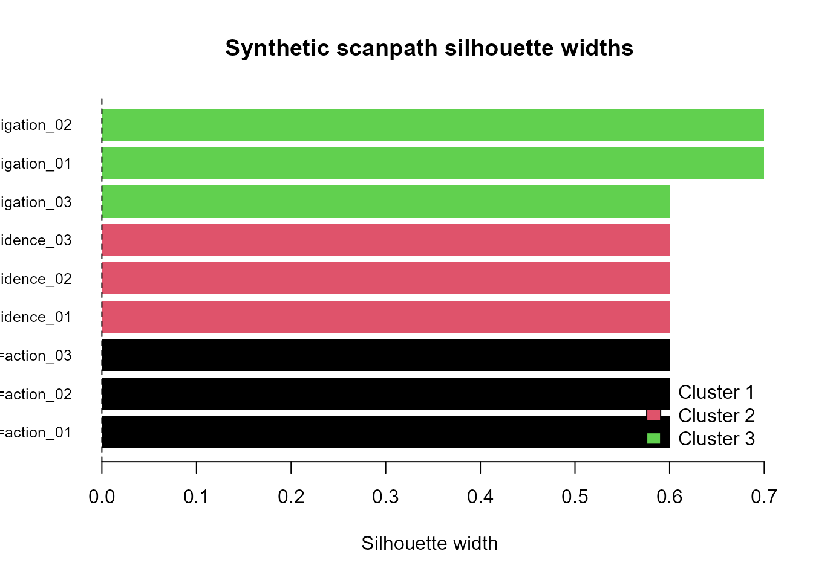
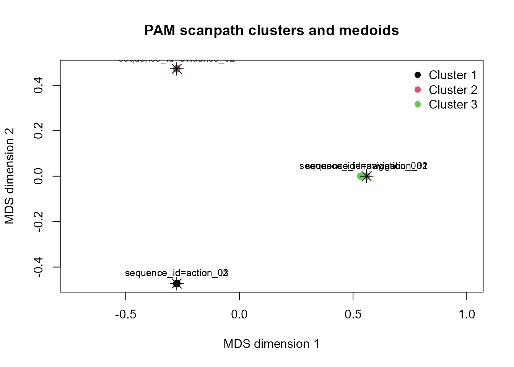

Scanpath clustering, selection, and visual diagnostics
Source:vignettes/articles/scanpath-clustering-workflow.Rmd
scanpath-clustering-workflow.RmdScope
This article demonstrates a lightweight workflow for grouping AOI fixation sequences according to pairwise sequence dissimilarity.
The clusters describe similarity in observed AOI ordering and transition structure. They should not automatically be interpreted as distinct cognitive strategies, intentions, or psychological states.
Synthetic AOI sequences
The example contains nine synthetic scanpaths organised around three different AOI-sequence patterns.
sequence_list <- list(
navigation_01 = c("map", "world", "map", "world", "map"),
navigation_02 = c("map", "world", "map", "world", "world"),
navigation_03 = c("map", "map", "world", "map", "world"),
evidence_01 = c("header", "claim", "evidence", "claim", "evidence"),
evidence_02 = c("header", "claim", "evidence", "evidence", "claim"),
evidence_03 = c("claim", "header", "claim", "evidence", "claim"),
action_01 = c("image", "cta", "image", "cta", "cta"),
action_02 = c("image", "cta", "cta", "image", "cta"),
action_03 = c("cta", "image", "cta", "image", "cta")
)
scanpath_data <- do.call(
rbind,
lapply(
names(sequence_list),
function(sequence_id) {
sequence <- sequence_list[[sequence_id]]
data.frame(
sequence_id = sequence_id,
fixation_order = seq_along(sequence),
aoi = sequence,
stringsAsFactors = FALSE
)
}
)
)
rownames(scanpath_data) <- NULL
utils::head(scanpath_data, 12)
#> sequence_id fixation_order aoi
#> 1 navigation_01 1 map
#> 2 navigation_01 2 world
#> 3 navigation_01 3 map
#> 4 navigation_01 4 world
#> 5 navigation_01 5 map
#> 6 navigation_02 1 map
#> 7 navigation_02 2 world
#> 8 navigation_02 3 map
#> 9 navigation_02 4 world
#> 10 navigation_02 5 world
#> 11 navigation_03 1 map
#> 12 navigation_03 2 mapPairwise sequence distances
pairwise_distances <- compute_gazepoint_scanpath_similarity(
data = scanpath_data,
aoi_col = "aoi",
group_cols = "sequence_id",
time_col = "fixation_order"
)
utils::head(pairwise_distances, 12)
#> sequence_a sequence_b edit_distance
#> 1 sequence_id=action_01 sequence_id=action_01 0
#> 2 sequence_id=action_02 sequence_id=action_02 0
#> 3 sequence_id=action_03 sequence_id=action_03 0
#> 4 sequence_id=evidence_01 sequence_id=evidence_01 0
#> 5 sequence_id=evidence_02 sequence_id=evidence_02 0
#> 6 sequence_id=evidence_03 sequence_id=evidence_03 0
#> 7 sequence_id=navigation_01 sequence_id=navigation_01 0
#> 8 sequence_id=navigation_02 sequence_id=navigation_02 0
#> 9 sequence_id=navigation_03 sequence_id=navigation_03 0
#> 10 sequence_id=action_01 sequence_id=action_02 2
#> 11 sequence_id=action_01 sequence_id=action_03 2
#> 12 sequence_id=action_01 sequence_id=evidence_01 5
#> normalized_distance similarity sequence_a_length sequence_b_length
#> 1 0.0 1.0 5 5
#> 2 0.0 1.0 5 5
#> 3 0.0 1.0 5 5
#> 4 0.0 1.0 5 5
#> 5 0.0 1.0 5 5
#> 6 0.0 1.0 5 5
#> 7 0.0 1.0 5 5
#> 8 0.0 1.0 5 5
#> 9 0.0 1.0 5 5
#> 10 0.4 0.6 5 5
#> 11 0.4 0.6 5 5
#> 12 1.0 0.0 5 5
#> n_sequences similarity_status
#> 1 9 ok
#> 2 9 ok
#> 3 9 ok
#> 4 9 ok
#> 5 9 ok
#> 6 9 ok
#> 7 9 ok
#> 8 9 ok
#> 9 9 ok
#> 10 9 ok
#> 11 9 ok
#> 12 9 okCompare candidate cluster counts
Silhouette-based comparison requires the optional
cluster package.
cluster_available <- requireNamespace(
"cluster",
quietly = TRUE
)
if (cluster_available) {
selection <- select_gazepoint_scanpath_clusters(
x = pairwise_distances,
k_values = 2:5,
method = "hierarchical",
linkage = "average"
)
selection$diagnostics
}
#> k mean_silhouette_width n_clusters method
#> 2 2 0.3822222 2 hierarchical
#> 3 3 0.6222222 3 hierarchical
#> 4 4 0.5111111 4 hierarchical
#> 5 5 0.3111111 5 hierarchical
if (cluster_available) {
recommended_k <- selection$recommended_k
hierarchical_fit <- selection$recommended_fit
} else {
recommended_k <- 3L
hierarchical_fit <- cluster_gazepoint_scanpaths(
x = pairwise_distances,
k = recommended_k,
method = "hierarchical",
linkage = "average"
)
}
hierarchical_fit$assignments
#> sequence_id cluster
#> 1 sequence_id=action_01 1
#> 2 sequence_id=action_02 1
#> 3 sequence_id=action_03 1
#> 4 sequence_id=evidence_01 2
#> 5 sequence_id=evidence_02 2
#> 6 sequence_id=evidence_03 2
#> 7 sequence_id=navigation_01 3
#> 8 sequence_id=navigation_02 3
#> 9 sequence_id=navigation_03 3The largest mean silhouette width identifies the strongest candidate among the evaluated values. It does not prove that the selected number of clusters is uniquely correct.
Hierarchical dendrogram
plot_gazepoint_scanpath_clusters(
hierarchical_fit,
plot = "dendrogram",
main = "Synthetic AOI scanpath hierarchy"
)
MDS distance representation
plot_gazepoint_scanpath_clusters(
hierarchical_fit,
plot = "mds",
main = "Synthetic scanpath-distance structure"
)
The MDS display is a two-dimensional approximation of the complete distance object.
Silhouette diagnostics
if (cluster_available) {
plot_gazepoint_scanpath_clusters(
hierarchical_fit,
plot = "silhouette",
main = "Synthetic scanpath silhouette widths"
)
}
Small or negative silhouette widths identify assignments that require additional review.
Representative scanpaths
representatives <-
extract_gazepoint_representative_scanpaths(
hierarchical_fit,
n_per_cluster = 1
)
representatives
#> cluster representative_rank sequence_id
#> 1 1 1 sequence_id=action_01
#> 2 2 1 sequence_id=evidence_01
#> 3 3 1 sequence_id=navigation_01
#> mean_within_cluster_distance cluster_size is_model_medoid
#> 1 0.4 3 FALSE
#> 2 0.4 3 FALSE
#> 3 0.3 3 FALSERepresentative identifiers can be joined back to the long-format observations for sequence timelines or qualitative inspection.
representative_rows <- scanpath_data[
scanpath_data$sequence_id %in%
representatives$sequence_id,
]
representative_rows
#> [1] sequence_id fixation_order aoi
#> <0 rows> (or 0-length row.names)PAM sensitivity analysis
PAM represents each cluster using an observed medoid scanpath.
if (cluster_available) {
pam_fit <- cluster_gazepoint_scanpaths(
x = hierarchical_fit$distance,
k = recommended_k,
method = "pam"
)
pam_fit$assignments
pam_fit$medoids
}
#> [1] "sequence_id=action_03" "sequence_id=evidence_03"
#> [3] "sequence_id=navigation_02"
if (cluster_available) {
plot_gazepoint_scanpath_clusters(
pam_fit,
plot = "mds",
main = "PAM scanpath clusters and medoids"
)
}
Stars identify PAM medoids in the MDS representation.